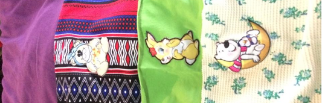

Fulares

Llevar a tu bebé con fular no sólo es increíblemente práctico y útil para integrarlo en tu vida diaria sino que además es la manera de ofrecerle el entorno más comodo y beneficioso posible.
Usando un fular puedes cocinar, comprar, jugar con los hermanos mayores, leer, pasear, desayunar, trabajar, hacer actividades con amigos... puedes ir prácticamente a cualquier lugar, juntos.
Y lo mejor de todo... ¡tienes las manos libres!
Beneficios
Lloran menos!
Regulan mejor su temperatura, ritmo respiratorio, digestivo, etc.
Son más sanos! Como no gastan tanta energía en otras tareas (llorar, regular su temperatura, etc.) ganan peso más rápidamente.
Estimulación motriz. Tienen una mejor motricidad, coordinación, aumento del tono muscular, y sentido del equilibrio.
Estimulación táctil. Están en contacto, están envueltos y contenidos, son a menudo acariciados. Mantienen una posición parecida a la del vientre materno.
Posición correcta. En un fular la posición es adecuada y favorable para el correcto desarrollo de la columna, fémur y caderas del bebé.
Estimulación visual. Obtienen una visión mejor del mundo.
Seguridad. Se independizan más rápido! Haciéndolos seguros.
Duermen mejor. Se duermen más rápido y duermen durante períodos más largos de tiempo.
¡Pueden ser amamantados en cualquier lugar!
¡Aprenden más! No están sobreestimulados, pero tranquilos y alerta, van observando y tomando consciencia del mundo que les rodea.
Bienestar. El bebé siente la seguridad de aquello conocido (calor, olor, voz de los padres). Disminuye su estrés y aumenta el bienestar.
Integración social. Forma parte de la vida de sus padres (conversaciones con amigos, actividades cuotidianas).
¡Son más felices! Se sienten queridos y seguros.
Los fulares son muy bueno para los padres
Vínculo afectivo. Los padres sienten una maternidad/paternidad satisfactoria, al disfrutar de un hijo satisfecho y feliz, y establecer este contacto físico.
Lactancia. Facilidad para amamantar en cualquier parte (mayor producción de leche, proximidad al pecho, facilidad para amamantar donde sea y discretamente).
Padres más tranquilos al ver al bebé tranquilo.
Manos libres!!!!
Facilidad de desplazamiento (playa, montaña, obras, escaleras, transporte público, etc.)
Bienestar físico. Menos molestias de espalda o musculares de brazos, debido a que el peso se reparte correctamente y simétricamente en toda la espalda y recae principalmente en la cadera.
Actividades. Gracias a que lo llevas contigo no hace falta abandonar las actividades cotidianas, muchas de ellas se pueden realizar llevando al bebé.